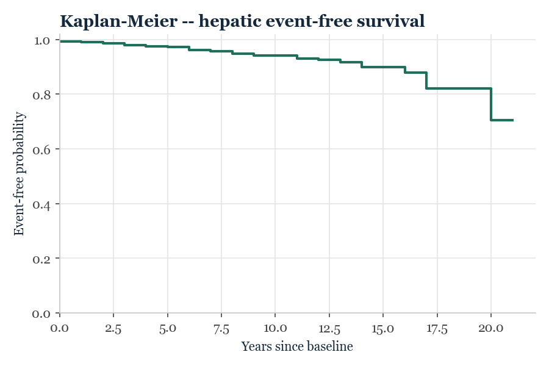
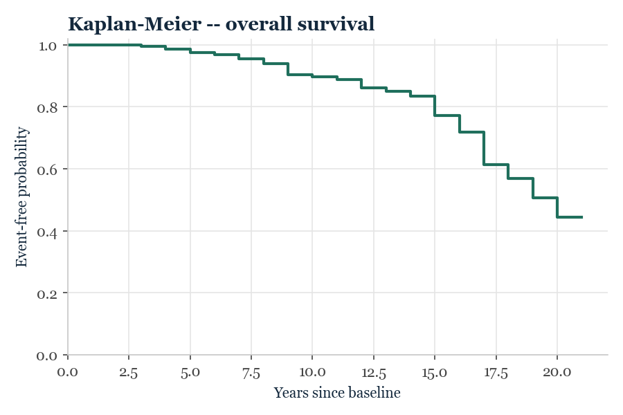
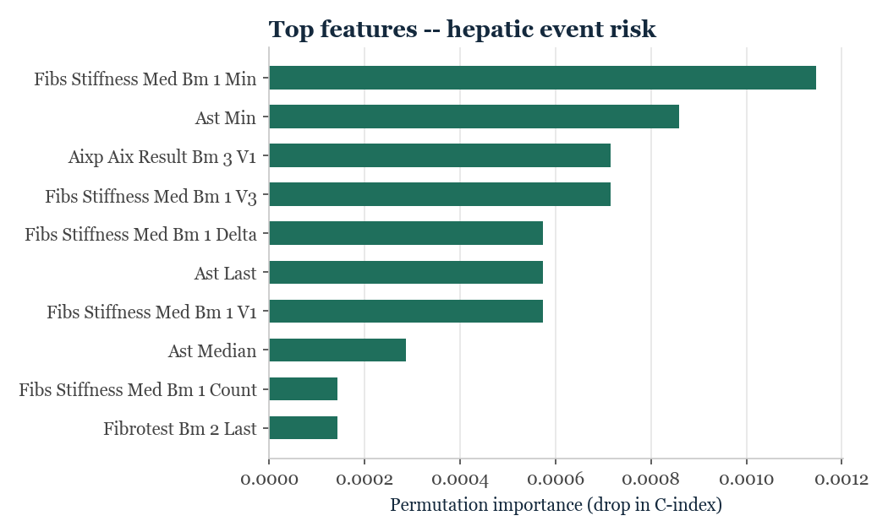
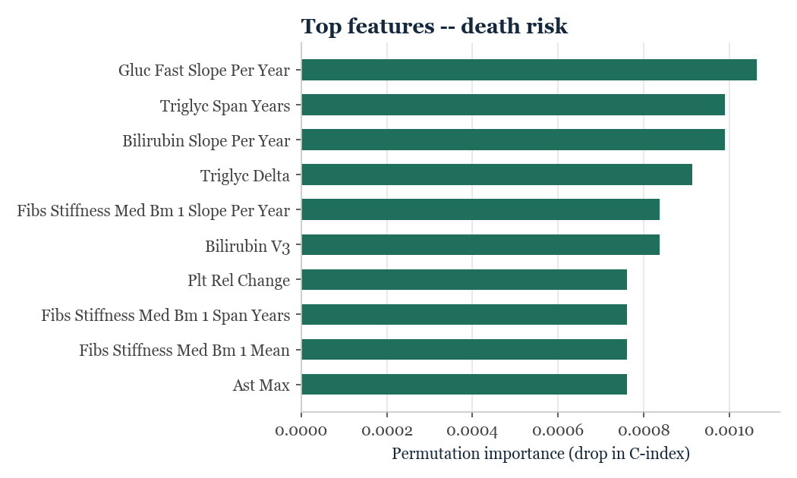

LiverRisk prediction
Upload a CSV file with the same columns as train.csv / test.csv, for one patient or a few patients, to get a risk prediction.
Build a test CSV
Pick a few sample patients from the competition's real (unlabeled) test set to build a CSV file you can try in the Predict tab.
Loading sample patients…
CSV preview
Select at least one patient above to build a file.
Rankings
See where a patient falls among the training cohort, by ML blend or by a clinical formula -- or rank the patients you've scored yourself in the Predict tab.
Behind the Scenes
What's actually driving these predictions -- the data, the models, and how well it all holds up, validated rather than assumed.
The data
- Real, longitudinal hospital records — patients tracked over up to 22 separate clinic visits across as long as two decades, not a single snapshot.
- Two outcomes, both genuinely rare — a major hepatic event occurs in just 3.75% of patients; right-censoring (patients who leave the study before anything happens) affects the majority of the cohort, requiring survival-analysis methods rather than standard classification.
- Synthetic, privacy-preserving cohort derived from real hospital data, built by a French national research consortium (ANNITIA / IHU ICAN) to make rigorous fibrosis-progression research possible without exposing real patient records.
Loading…
Turning 22 visits into 255 features
- Every lab collapsed into 12+ engineered signals per marker — not just a snapshot value, but first, last, minimum, maximum, mean, standard deviation, missingness rate, and a regression-fitted slope per year, capturing whether a patient's liver markers are trending up or down, not just where they stand today.
- Clinical formulas computed directly from raw labs — FIB-4 and APRI reproduced faithfully from their original published equations, both at baseline and at the most recent visit, so the model can be benchmarked against exactly what a hepatologist already uses.
- Missingness engineered as a signal in its own right, not silently imputed away — the model can learn that a patient with sparse data looks different from one with dense follow-up.
255 total engineered features, distilled from roughly 15 raw clinical measurements — a >15x expansion designed specifically to capture trajectory, not just a single point in time.
Why this had to be survival analysis, not standard prediction
- Patients are followed for wildly different lengths of time — some for months, some for two decades — and most never experience the tracked event during observation.
- A standard classifier would have to either discard every patient without a confirmed outcome, or mislabel “haven't had the event yet” as “never will” — both approaches would throw away most of the dataset's real signal.
- Kaplan-Meier estimation — the clinical gold standard for exactly this problem — is used below to show real event-free survival over time, computed directly from data, no model involved.


Three fundamentally different models, independently tuned
- Coxnet (penalized Cox regression), Random Survival Forest (500 trees), and XGBoost (gradient-boosted survival trees) — three structurally unrelated approaches, deliberately combined so no single model's blind spots dominate the final score.
- Every model's hyperparameters were tuned independently, per outcome — not shared defaults. A dedicated cross-validated search discovered, for example, that a heavily regularized linear model works best for the rare hepatic-event endpoint, while a much less conservative configuration wins for mortality — a real, data-driven finding, not a guess.
- Rank-based blending, not simple averaging — each model's predictions are converted to percentiles before being combined, so a model with a wider numeric scale can never silently dominate the ensemble.
The blend weighting itself was discovered, not assumed — a systematic grid search over every valid weight combination found that the strongest hepatic-event predictions actually come from the forest model alone, while mortality benefits from a genuine three-way blend — an asymmetric result the model was allowed to find on its own, rather than a fixed formula imposed on it.
How well it actually works — validated, not just measured
- Weighted concordance index: 0.849 — the official competition metric (70% hepatic-event ranking accuracy, 30% mortality), evaluated with proper cross-validation so every patient is scored only by a model that never saw them during training.
- Benchmarked against real clinical formulas, with statistical rigor — not just “our score is higher.” A bootstrap resampling analysis (1,000 resamples) was used to test whether the model's advantage over FIB-4 and APRI is statistically real or could be chance. Result: a statistically significant, large advantage for predicting mortality — and an honest, reported tie for the hepatic-event endpoint, where the simpler formula holds its own.
- That kind of finding — reporting a null result where the data actually shows one, rather than only the wins — is deliberately part of the validation, not an omission.

